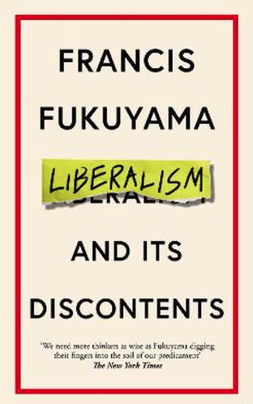

In 1989 schreef Francis Fukuyama een essay met de titel The End of History? en drie jaar later werkte hij zijn gedachten uit in een optimistisch The End of History and the Last Man. De westerse liberale democratie met vrijheid en gelijkheid kon niet worden verbeterd en de Geschiedenis kwam daarmee ten einde. Dertig jaar later komt zijn Liberalism and its Discontents uit. Nog steeds denkt hij dat er niets uitgaat boven de politiek van het liberalisme. Toch wordt het van rechts en links sterk bekritiseerd en bedreigd. In dit boek verdedigt hij het klassieke of humane (mijn voorkeur) liberalisme. Het gaat hem niet om oplossingen voor concrete maatschappelijke problemen, hij vraagt aandacht voor de onderliggende principes van passende politiek. Het is belangrijk om de uitgangspunten van het liberalisme goed te begrijpen en de ontwikkeling ervan te snappen. Hoe staat het liberalisme ervoor en waar hoort het te staan, waar komt al die hedendaagse ontevredenheid vandaan en hoe is het liberalisme weer zo aan te scherpen dat het bij deze tijd past? Niet het liberalisme afschaffen, want het is en blijft voor Fukuyama superieur aan de alternatieven, maar het moderniseren, dat is wat hij wil.
Voor Fukuyama is liberalisme de doctrine die de macht van overheden wil beperken door de constitutie, de opbouw en het onderhoud van wetgeving en instituten die rechten van burgers beschermen. Het liberalisme verdedigt de rechten van individuen en zorgt ervoor dat mensen zichzelf kunnen zijn, kunnen zeggen wat ze willen, lid kunnen worden van verenigingen, kunnen geloven wat ze willen en kunnen deelnemen aan het politieke leven. Het liberalisme kent een pragmatische rationaliteit waar het het vreedzaam samenleven met elkaar regelt. Tegelijk is het moreel gericht, waar het menselijke waardigheid en autonomie beschermt, en economisch gericht, met aandacht voor eigendomsrechten en de bescherming van vrijheid van transactie. Het gaat in het liberalisme niet zozeer om het goede leven, meer om leven mogelijk maken door vrede en veiligheid te bieden. Het liberalisme kwam tegen de achtergrond van 150 jaar geloofsstrijd in Europa tot stand en zou in combinatie met democratie en de opbouw van goed functionerende staten met name na de Tweede Wereldoorlog tot bloei komen en zorgen voor politieke, sociale en economische rust. Overregulatie, onbetaalbare sociale systemen en een economie die stagneerde zorgden ervoor dat dat het klassieke liberalisme neo-liberalisme wordt. Met die aftakking krijgen we te maken met deregulatie, privatisering en globalisering en ontstaat grote sociale ongelijkheid, verschuift macht en krijgen we met demografische veranderingen te maken. Onder dat neo-liberalisme worden mensen zelfzuchtiger en willen ze in extreme mate eigen keuzes kunnen maken. Meer en meer sluiten mensen zich op in hun kleine wereld van gelijkgezinden en komen verder af te staan van de gemeenschap en de politiek. Het liberalisme bijt zichzelf in de staart en maakt op deze manier de weg vrij voor populisme. Daar waar het liberalisme voorheen juist zo goed in was (omgaan met tolerantie, diversiteit en mensen erbij houden), wordt het nu zowel door mensen ter rechter- als linkerzijde bekritiseerd. Het marktdenken slaat een groot gat tussen rijken en armen, dat ter rechterzijde vooral gevoeld wordt. De verliezers hier keren zich tegen immigratie en voelen zich opzijgezet door niet-blanke immigranten. Ter linkerzijde wordt vooral heil gezocht in leefstijlkeuzes en identiteitspolitiek, gebaseerd op ras, etniciteit, geslacht, religie en seksuele oriëntatie.
Het liberalisme voelde zich lang sterk verbonden met wetenschap en technologie. Er was dat vertrouwen in de objectieve werkelijkheid gebaseerd op empirische bewijsvoering en de autoriteit van de spreker. Nu is dat heel anders en ‘is niets waar en is alles mogelijk’. In liberale samenlevingen was men het vaak oneens over de doelstellingen, maar het wordt wel heel moeilijk als we dat over de feiten zijn. De objectieve wereld maakt tegenwoordig niet zelden plaats voor een subjectieve fantasiewereld van gevoelens en emoties. Vrijheid van spreken is ook essentieel voor een goed functionerende samenleving. Die vrijheid mag niet in handen komen van een kleine groep machthebbers. Ook is het daarvoor niet goed als media en communicatie alleen in private handen komen en er sociale media van alles gezegd wordt. De kwaliteit van het vrije woord en de informatie is dan noodzakelijk, met normen van burgerlijkheid en respect voor het private. Fukuyama heeft niet veel op met de alternatieven op het liberalisme die geboden worden, of die nu uit religieuze, nationale, conservatieve of progressieve hoek komen. Volgens hem is het nodig dat het liberalisme niet langer de overheid als grote vijand en sta in de weg ziet voor economische groei en individuele vrijheid. Een overheid vertrouwen is nodig wil die overheid haar publieke taken goed kunnen uitvoeren. Dat kan door de kwaliteit van de overheid op peil te brengen, met voldoende menselijke en materiële middelen. Niet alles van bovenaf maar ook op lager niveau om zo dichter bij de burger te staan.
Zo stevig als het liberalisme dertig jaar geleden nog in het zadel zat is het al lang niet meer. Haar tekortkomingen zijn duidelijk geworden en Fukuyama beschrijft dit alles glashelder. Een deel van de tekortkomingen waren toen ook al zichtbaar, maar het was of we dat met z’n allen toen niet wilden zien. Vooral links en de identiteitspolitiek krijgen het er van Fukuyama van langs en in dat opzicht had hij wel wat meer balans kunnen aanbrengen. In zijn boek besteedt hij vooral aandacht aan hoe het liberalisme binnen de eigen grenzen door zichzelf en door anderen in gevaar wordt gebracht. De bedreiging van buiten laat hij erbuiten. Het boek heeft hij zelf voor de oorlog in Oekraïne afgemaakt en die beperking is nu te merken.

Fukuyama, F. (2022). Liberalism and its Discontents. London, Profile Books.